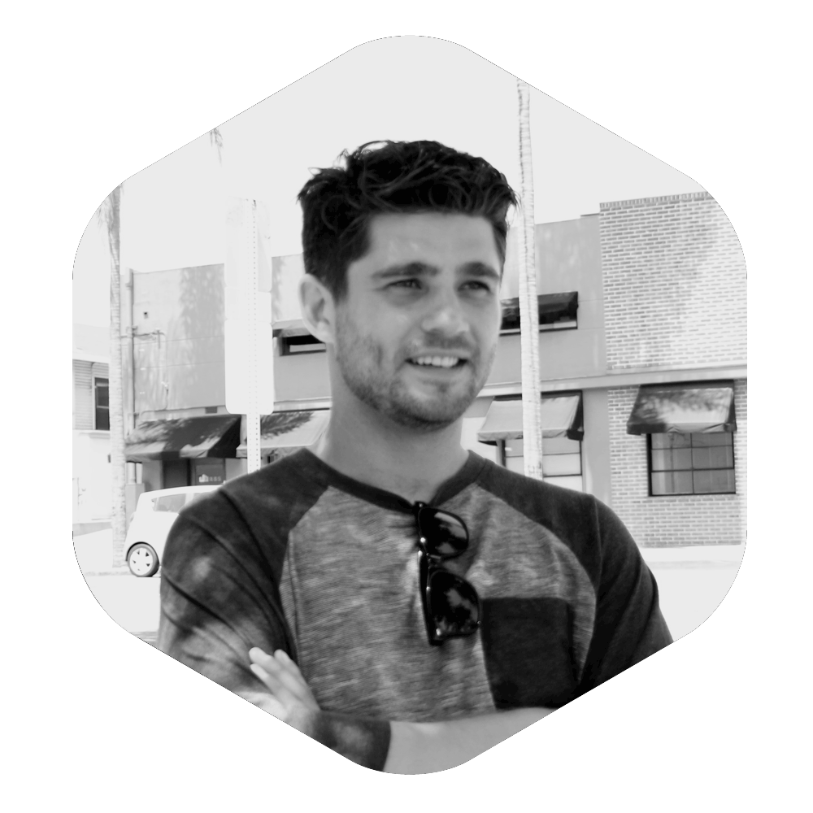

A Little Bit About Myself
"I like to look at the web as an untapped medium and its my job to learn how to master my tools and languages."

"I like to look at the web as an untapped medium and its my job to learn how to master my tools and languages."
I found web development a bit by accident. While taking a break, I was invited into a tech firm from the back alley of a café I worked at. By the time I walked out they had offered me an internship... It was presented to me a bit like a secret, or as if I had found treasure buried in the back yard. Once discovered there was no turning back. I was, and have been, consumed by my passion for web since.
My passion developed from the artistic side. I guess one could say I have been "publicly-proclaimed" an artist due to the fact that I post work my illustration work a few times a week, and that's what many people associate me with. I jumped into CSS, and hit the ground running. I like to look at the web as an untapped medium and its my job to learn how to master my tools, and languages.
My problem in the beginning was that I was unchallenged at my first internship, and praised for the simple work I was doing. I could tell this was detracting from my progress, so I left and moved to Washington State to build my first site for someone besides myself.
Once that roller coaster of a job ended I moved down to San Diego to spend time with my mother, and got a job at the agency I am currently at.
Working in an enterprise environment at this pace was a big wake up call for me. I learned, being around other web developers, that I knew nothing. This was exciting and terrifying at at the same time. Exciting because everyday I learning more and more, but terrifying because I was struggling to keep up with the workload. My personality type doesn't like to fail. I worked overtime throughout my first 3 months, and soon I was being respected as one of the senior employees.
Throughout my time at Taylor & Pond I have worked primarily with the schools we're associated with. I helped build out templates and transfer content through the OmniUpdate for the new San Diego Mesa College website. I am the webmaster for San Diego City College's website, which runs on DotNetNuke. I am also part of the Herbalife Development team, which builds and customizes templates for hundreds of Herbalife sites in hundreds of languages though Wordpress. I do most of the banner designs for San Diego City College, which are featured on the homepage. I have also been able to dabble in AspDotNetStorefront for minx cosmetics.
Things have moved very fast and in the process I have proven to myself, without a doubt, that this is what I want to do for the rest of my life. Things are to the point with my current company were I am spending 2-3 hours a night teaching myself. Although I have always studied in my off-time, it has become more of a primary focus as a means to leave to discover life's next challenge.
Working as a web content specialist, I may not be presented with the biggest challenge, but I hope to get involved with my dream company. In doing so I might have the opportunity to come on as one of the front-end developers in the future.